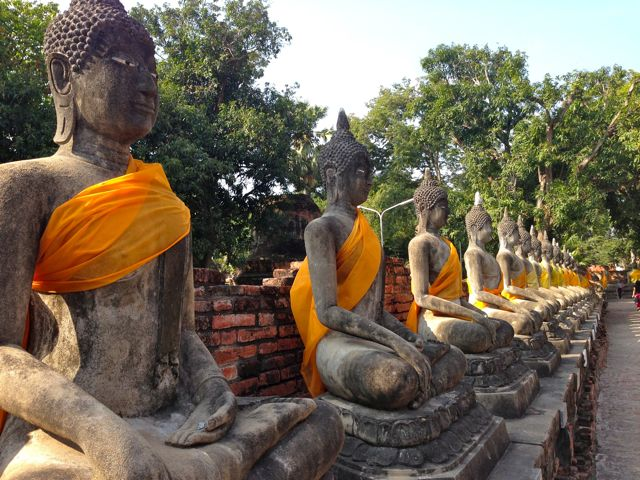

A História da Tailândia
A história da Tailândia é marcada por uma rica herança cultural, períodos de prosperidade e desafios políticos. A região era habitada por diversos povos antes da formação do Reino de Sukhothai no século XIII, considerado o primeiro Estado tailandês. No século XIV, o Reino de Ayutthaya emergiu como uma grande potência, dominando a região até ser destruído pelos birmaneses em 1767.
Após a queda de Ayutthaya, o general Taksin reunificou o país e estabeleceu a nova capital em Thonburi. Posteriormente, o rei Rama I fundou a dinastia Chakri em 1782, transferindo a capital para Bangkok. Essa dinastia continua governando a Tailândia até os dias de hoje.

Ao contrário de outros países do Sudeste Asiático, a Tailândia nunca foi colonizada por potências europeias, mantendo sua independência por meio de diplomacia e modernização. No século XX, o país passou por transformações políticas significativas, incluindo a transição de uma monarquia absoluta para uma monarquia constitucional em 1932. Desde então, a Tailândia experimentou períodos de instabilidade política, golpes militares e protestos populares.
Hoje, a Tailândia é uma nação moderna e dinâmica, com uma economia forte baseada no turismo, na indústria e na agricultura, mantendo suas tradições culturais e a importância da monarquia na sociedade.